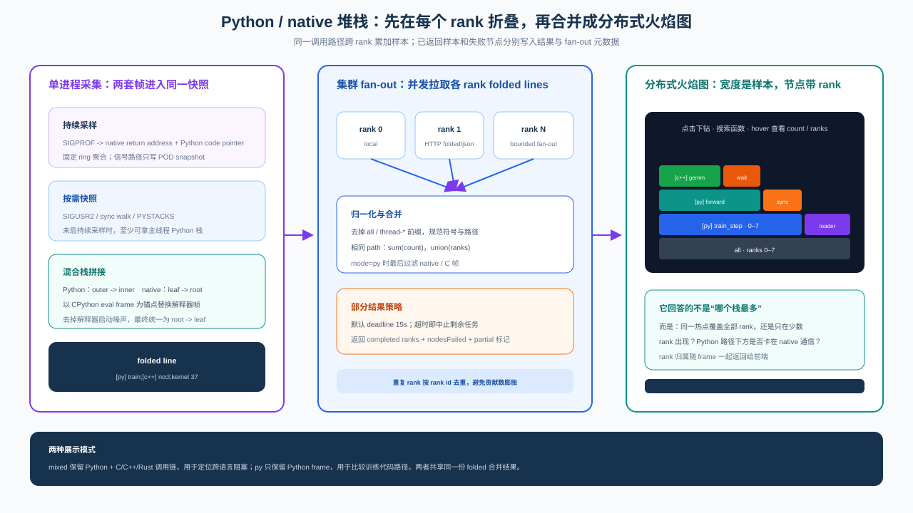

性能采集架构¶
性能分析首先是一个成本分配问题：长期运行需要低开销和稳定坐标，深入定位则需要算子、内核和 调用栈等高密度事件。单一采集器无法同时满足这两个目标。Probing 因而不追求“一次采全”，而是把 持续观测与短窗口深挖拆成独立路径，再在查询阶段组合证据。
整体分解¶

采集发生在数据所在进程，因为 module hook、通信回调和运行时栈只有本进程能以最低成本取得。 每个采集器只维护自己的状态并写本机表，彼此不在热路径调用。这样，一个采集器的版本差异、锁竞争 或失败不会扩散到训练主路径和其他采集器。
独立采集带来的问题是数据如何重新关联。Probing 没有再引入一条同步总线，而是让所有事实携带 step、rank、时间和并行角色坐标。协调成本从采集时移动到查询时：采集路径保持短小，查询引擎负责 跨表、跨 rank 恢复完整上下文。这是后续 Torch、NCCL、HCCL、堆栈和系统指标能够独立扩展的基础。
PyTorch 的两级观察路径¶
TorchProbe 与 Torch Profiler 并存，不是因为能力重复，而是因为观察尺度与成本不可兼得。 TorchProbe 常驻训练过程，只保留 step、module、optimizer 和显存变化；它牺牲算子级细节，换取 可采样、可测量并能长期运行的成本。Torch Profiler 依赖 Kineto，在一个已知异常窗口内采集 CPU op、 CUDA kernel、runtime 和 memcpy；它提供更深证据，但不适合作为持续遥测。
两条路径拥有不同的生命周期、缓冲和失败边界，因此不能合并成一个状态机。它们只通过相同的 step/rank 坐标在 SQL 中相遇。由此形成明确的诊断递进：持续路径先缩小到异常 rank、step 和 module， 短窗口路径再为该范围支付更高成本。两者同时开启时成本相加，TorchProbe 的 shadow 估计也只解释 TorchProbe 自身，不能被误读为 Kineto 的成本。
Torch Profiler：一次有边界的采集事务¶

ProfilerController 同时只允许一个 capture，因为 Kineto 本身拥有进程级状态；并发 session 不仅
难以归属事件，也会让停止和清理失去确定边界。capture 在 optimizer step 边界推进，使不同 rank 的
窗口可以用训练坐标对齐，而不是依赖控制请求到达的瞬间。
窗口关闭后才做聚合和格式转换，避免把 key_averages()、原始事件遍历和 JSON 生成放进训练热路径。
结束处理优先产生 op/kernel 聚合；聚合不可用时保留有界原始事件，并显式记录 truncated，不把
不完整结果伪装成完整结果。
同一份 capture 派生出两种视图，是为了分离“机器分析”和“人工查看”。
python.profile_capture 与 python.profile_hotspot 是有界 session store 上的虚拟表，供本机或
global.python.profile_hotspot 做过滤、聚合和跨 rank 比较；完整 traceEvents 保持时间线结构，
交给 Web 可视化。原始时间线不展开写入 MEMT，因为逐事件复制会放大写入成本，而 session 生命周期
也不同于长期遥测数据。
TorchProbe：可长期运行的 step 状态机¶

optimizer hook 定义 step 边界，module hook 只记录本 step 内的局部事实。主线程推进状态机、执行采样 判定并写入有界事件；CUDA elapsed 读取和批量整理进入延迟队列。关闭 step 时先固定本步墙钟，再排空 旧事件，因此排空成本不会被记到刚结束的 step 上。
hook 选择服从“最小侵入”原则。forward 使用 module pre/post hook；backward 不使用容易与 inplace 激活冲突的 module backward hook，而是在前向输入、输出张量上注册 grad hook，以 grad_output ready 到 grad_input ready 近似模块反向区间。无法形成这两个边界的模块不制造虚假的精确时长。
采样分成两级，因为 step 密度和单步覆盖面是两个独立的成本旋钮。step gate 按 step 序号做等间距
确定性采样，所有 rank 因而选择同一批 step；进入采样 step 后，再以 (step, layer) 的确定性哈希
决定 module 命中。默认 rate=0.05、layer_rate=1.0，即用少量 step 的完整 module 快照保留层间关系。
未采样 step 在 hook 入口短路，但仍写 step 墙钟，避免长期趋势出现空洞。
shadow step 默认按 4:1 交错插入并绕过 TorchProbe hook。这个设计把基线放在同一次训练、同一份
负载中，减少离线 A/B 的环境漂移；代价是它只能测量 TorchProbe 路径。详细计时边界、统计口径和
稳定性门槛见开销模型。
持续路径最终只发布两个稳定契约：python.torch_trace 保存 module 级事实，
python.torch_step_timing 保存 step 类型和墙钟。字段定义属于
SQL 表参考，而分布式时间线如何在这些本机事实之上
构造，见分布式 Profiler 查询与可视化。
Megatron 坐标集成¶

Megatron 适配器只负责坐标转换，不是新的采集器。import hook 观察
megatron.core.parallel_state 与 megatron.training.training；相关 API 就绪后，适配器把
TP/PP/DP/EP/CP rank 写入 probing.set_role(...)，并以 best-effort 方式包装 train_step，
将 Megatron iteration 与 micro-batch 数对齐到 probing.step(...)。
版本敏感的 Megatron getter 因而集中在一个适配器内。TorchProbe、通信、堆栈、Profiler 与系统 采集器仍然只依赖公共 step/role 状态，并在 SQL 中关联。模块不存在或 API 不兼容时只降级集成， 不能阻塞训练循环。运行时开关见环境变量 — Megatron 自动集成。
通过 MSProf 边界采集 HCCL¶

在昇腾环境中，HCCL 已经通过 libprofapi.so 上报 profiling 事件。Probing 在该边界放置 ABI
兼容的 shim：导出 HCCL 所需的 MSProf 符号，分类并解码 ReportApi、
ReportCompactInfo 和 ReportAdditionalInfo，分别追加到 hccl.host_ops、
hccl.collectives、hccl.tasks、hccl.mc2_streams 与 hccl.context_ids，随后把原参数和
返回值转发给真实 CANN 库。
真实库按 PROBING_HCCL_PROFAPI_REAL、shim 同目录的 libprofapi.so.real、Ascend 安装目录
依次解析。某张表打开失败只停用该表，不影响原调用转发。MSProf 结构体布局跟随部署的 CANN 版本，
因此安装时必须保存匹配版本的真实库并验证 ABI。shim 不按裸名称再次加载 libprofapi.so，避免递归
加载自身。
Tracing 与训练阶段¶
Tracing 负责粗粒度的训练时间线，TorchProbe 负责 module 级 timing 与显存事实。二者可以在 同一 step 上关联，但不能重复拥有 forward/backward/optimizer 阶段。
状态所有权与持久化¶

Span 栈是阶段状态的唯一来源，持久化只是它的一个出口。probing.span 创建嵌套作用域，
probing.event 在当前作用域内打点，record_span 则直接提交已经闭合的区间。三种入口最终都经过
SpanRecorder，从而让 memtable、logger 和 OTEL 只承担输出职责，不反向影响阶段状态。
probing.span 默认延迟关闭：没有 event 的 span 退出时只写一个闭区间；出现 event 后才按需写
span_start，退出再写 span_end。这个选择减少无事件作用域的写放大，代价是运行中的无 event span
暂时不能被 SQL 看见。这是提交语义，不是数据丢失。
PROBING_SPAN_BACKENDS 默认为 memtable，也可选 logger、otel 或 none。none 仍维护
线程内 span 栈，但跳过 attributes、JSON 和落盘，用于 benchmark 或只需 phase() 的场景。
PROBING_SPAN_LOCATION=1 会调用 inspect.stack()，不应在生产训练热路径默认开启。
训练阶段不变量¶
训练阶段没有第二份全局状态。phase 始终从 span 栈中最内层的
forward、backward 或 optimizer 得到；栈中没有训练阶段时就是 idle。train.step 是一次
logical iteration 的闭区间，不是第四种 phase。optimizer 退出时才推进 micro_step，再根据
micro_batches 折算 local_step，因此梯度累积不会制造假的完整 step。
必须保持以下不变量：
phase()从 span 栈派生，不维护第二份全局阶段状态；一个 batch 之外显示idle是正常的。train.step从本 logical iteration 的第一次 forward 开始，到 optimizer hook 退出结束； 梯度累积中的中间 forward/backward 不重置它。- 每次 optimizer 退出最多写一条
train.step，且此前必须观察到 forward。 - 同一 phase 同时只允许一个拥有者；手动 span、phase hook 或 TorchProbe 已打开该 phase 时， 其他 hook 不重复创建。
micro_batches=k时，每 k 次 micro step 才推进一个local_step。
阶段所有权只交给 attach_training_phases：它关闭 forward/backward/optimizer，并提交
train.step 墙钟。TorchProbe 发现已有 owner 时不重复创建阶段，只发布 module timing 与显存事实。
这一所有权规则避免同一训练区间被两套 hook 重复解释。
查询层通过 probing.tracing.SPANS_SQL 把 python.trace_event 的 start/end 行恢复成闭区间，
采集器不额外维护第二份 duration 表。坐标与表语义见核心模型，backend 环境变量见
环境变量。
Python 堆栈分析¶

跨 rank 时先在数据所在进程生成 folded lines，再由查询入口归一化并合并相同调用路径。 结果同时保留路径权重、完成/失败节点以及路径覆盖的 rank，避免上传全部原始 stack sample。
堆栈路径被切成 StackSnapshot → ParsedStacks → FoldedStacks 三个阶段，核心原因是异步信号环境
不能做分配、符号化或复杂锁操作。capture 只把线程、来源标记、native PC 和已 intern 的 Python
frame key 写入固定结构；parse 离开信号上下文后恢复符号与混合栈；fold 再做指纹聚合和火焰图输出。
按需抓栈与连续采样因此可以共享后两段，而不会把各自的触发机制耦合进数据解释。
Python frame 的唯一来源是 eval-frame VM tracer。符号在持有 GIL 时 intern，信号路径只复制 key。
native frame 在 Linux 由运行在备用信号栈上的 SIGPROF/SIGUSR2 handler 原地填充。macOS 的异步
SIGPROF 可能落入系统 SIMD 例程并导致 SIGILL，所以默认改用 eval-frame 节流的协作式 Python
采样；需要 native 栈的按需路径通过 Mach 短暂停线程、复制 PC/帧指针后立即恢复，再异步符号化。
平台差异被限制在 capture 阶段，后续 parse、merge 和 fold 保持一致。
连续采样使用有界 ring 和双发布缓冲；缓冲繁忙时丢弃快照并计数，而不是阻塞训练线程。查询或 Web 请求优先复用最近快照，不再向已被持续采样的主线程追加一次信号。跨 rank 时，各进程先把重复调用路径 折叠成带权 folded lines，再合并相同路径并附带 rank 覆盖范围。这把网络传输量从“原始样本数”降为 “不同调用路径数”，同时允许部分 rank 失败时返回可解释的不完整结果。
TorchProbe 的 module 火焰图与 CPU 混合栈使用相同的跨 rank 聚合思想，但采集状态彼此独立：前者 来源于 module timing，后者来源于 VM/native snapshot，二者只在查询和展示层组合。
与其他层的边界¶
系统指标按周期采样，Torch、通信和堆栈按各自事件触发；它们只共享坐标，不共享调度线程。 所有长期事实进入列式探针表，保留、冷热分层和跨 rank 查询由数据层与查询引擎决定，采集器不自行 实现第二套存储策略。字段和 SQL 示例见表参考与 SQL 分析指南；生产开销的测量方法和不变量见开销模型。